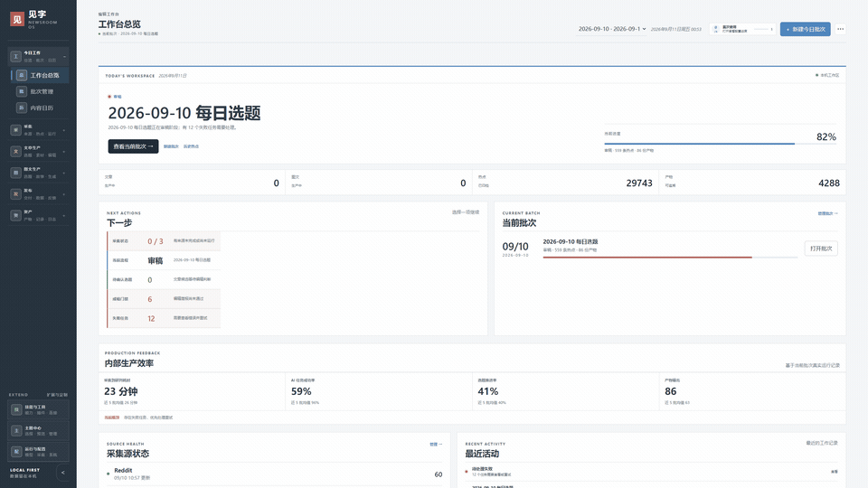

采集与聚类
RSS、网页、Reddit、GitHub 热点进入同一张工作台，重复消息先合并成事件。
COLLECT → RESOLVELOCAL-FIRST CONTENT WORKBENCH
见字把“找题、研判、写稿、审稿、排版、交付”收进一条可以回头检查的本地 AI 工作流。
05 / DESKTOP APP
见字已经提供 Windows 10/11 x64 安装包。它保留本地优先的数据和工作流，同时增加原生菜单、快捷键、可选运行数据目录与独立窗口体验。
01 / THE EDITORIAL LOOP
RSS、网页、Reddit、GitHub 热点进入同一张工作台，重复消息先合并成事件。
COLLECT → RESOLVE把事实、受众、风险和写作角度拆开，形成可比较、可复盘的候选选题。
EVENT → BRIEF文章、公众号 HTML、封面和社交图文进入产物柜，版本和运行记录一起留下。
DRAFT → DELIVERY02 / READ-ONLY FLOW TOUR
这是为了理解工作流制作的结构化导览，不是实际工作台的逐像素复刻。下方可以查看真实界面截图与生产批次只读预览 GIF。
只读流程导览仅展示脱敏后的生产批次摘要，不连接模型、不采集、不写入。真实界面见下方，完整工作台请在本地运行。
03 / THE REAL INTERFACE
先看一条真实链路，再打开具体页面，认识见字真正的工作表面。轮播第 1 张是 GIF，后面是静态截图。
公开批次：2026-09-08 · 界面录制：2026-09-09
从总览到热点、选题、编辑和公众号排版，21 秒看完一条真实链路
04 / QUICK START
Windows 用户推荐从 GitHub Releases 下载最新安装包。安装时可以选择应用安装目录和运行数据目录；文章、图片、日志与 RSSHub 依赖会写入运行数据目录。
首次启动会打开应用内引导。在“运行与配置 → 模型接入”添加 OpenAI 兼容服务，填写 Base URL、模型名和 API Key，先完成连接测试。
运行与配置 → 模型接入 → 添加模型依次完成采集 → 研判 → 编辑决策 → 成稿 → 审稿 → 排版，再从产物柜查看公众号 HTML、封面和社交图文。
BUILT FOR PEOPLE WHO WRITE